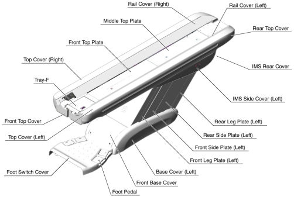
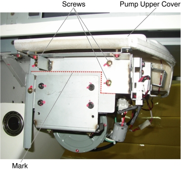
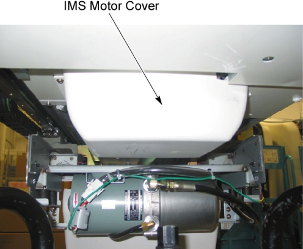

Operating Documentation
Direction 5193575-800, Rev# 5
LightSpeed 7.X Service Information - Adv
Operating Documentation |
| Required Persons | Preliminary Reqs | Procedure | Finalization |
|---|---|---|---|
| 1 |
| Last Revised: | 26 November 2007 |
Raise the Table to maximum height.
Move the Cradle and IMS to OUT limit position.
Remove power from Table by turning off 120VAC, Axial Drive and HVDC switches on Service Switch Panel.
Remove the following Table covers:
Top Cover (Right/Left)
IMS Rear Cover
Illustration 1: Table Covers

Disconnect the cable connector of the tape switch.
Illustration 2: Pump Upper Cover Removal

Remove the pump upper cover as follows:
To make re-installation easier, mark the position of pump upper cover on both sides by outlining the edge with a maker or pencil.
Disconnect the cable connectors of the tape switches and touch sensors.
Remove six (6) screws holding the both sides of the pump upper cover, and remove it.
Illustration 3: Pump Upper Cover Removal

Remove IMS motor cover.
Illustration 4: IMS Moto Cover and IMS Drive Belt Location

If the clean damper is mounted on the IMS motor shaft, remove it.
Illustration 5: Clean Damper

Mark the motor bracket position for re-installation.
Loosen 2 screws to remove tension from the belt, and remove it.
Illustration 6: IMS Drive Belt Removal

Position the new belt on and around the motor pulley and the shaft pulley.
Align the surface of the bracket with the mark, and tighten the 2 screws, to fasten the motor, with tension on the belt.
Adjust the belt tension according to IMS Belt Tension Adjustment.
If the clean damper is removed, re-install it to the IMS motor shaft.
Illustration 7: Clean Damper Installation

Power up the Table from the service Switch Panel.
Use the Gantry control keys to move the IMS in and out.
When the Table functions properly, turn off all 3 switches (Axial Drive, HVDC, 120VAC), and re-install the Table covers.